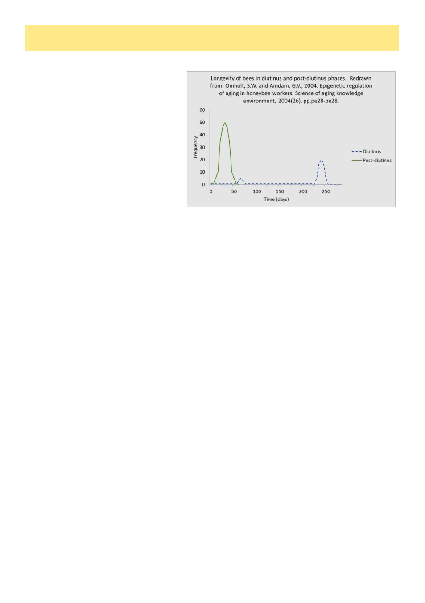

10
Australian Bee Journal
Winter Bees
By Andrew Wootton
As we approach our first Victorian winter
with varroa mites, we must be even more care-
ful to consider colony health. Bees in winter
are different from those of the rest of the year.
Instead of a work-weary demise after about 6
weeks, winter bees are longer lived. Indeed in
climates much colder than ours, they may sur-
vive for as long as 6 months.
Last month Kris Fricke discussed the role of
vitellogenin in honey bee biology.1 To recap, it
has various immune and protective functions as
well as being responsible for suppressing Juve-
nile Hormone which itself leads to aging and
maturation from nurse to forager roles.
In temperate climates, long-lived workers
develop in autumn as the production of brood
ceases before winter. Winter bees or diutinus
bees closely resemble those of young summer hive bees, with well-developed hypopharyngeal glands, high titres of
vitellogenin and low titres of juvenile hormone,2 which is a releaser of foraging behaviour at high concentrations.3
The transition from in-nest behaviour to foraging is delayed by several months in winter bees.
Impact of varroa on winter bees
When bees are infested with varroa during the pupal stage, vitellogenin levels are approximately halved compared
to noninfested controls.4 This results in a lower storage capacity for protein in infested bees indicating a physiologi-
cal basis for the severe impact of V. destructor on honey bees in temperate zones. Failure to develop as long-lived
winter bees makes them less likely to survive until spring. Colonies treated earlier in the season had reduced varroa
infestation during the development of winter bees, resulting in longer bee lifespan and higher colony survival after
winter.5
Now we come to a key consideration, what is the relevance to us, of studies performed in more severe winters?
This is harder to ascertain and the National Varroa Mite Management program has consistently maintained that our
environmental conditions are sufficiently different to mean overseas experience may not apply.6 Studies of
“tropical” bees seem unhelpful, as they largely relate to “Africanised” bees which have extreme variations in their
grooming and absconding behaviours outweighing any wintering effects. One study from Argentina7 where climate
conditions do not result in a broodless period, confirmed that early treatment and low initial mite loads both im-
proved lowering of mite loads. We know that it is the length of time over which brood cells are available and not the
total number, that exerts the greatest effect on mite population growth.8 Thus damage from varroa is more severe in
long brood rearing seasons than in short ones.
Treatment Timing
Despite any uncertainty due to our local environment, we should assume that delaying mite treatments to late au-
tumn will impair the physiology of the winter bees and may result in colony losses. The message is clear; act early
and don’t wait until winter pack down before making final treatment decisions. And speaking personally, I plan to
treat as soon as I detect varroa in my hives, not waiting for any threshold to be exceeded. I want my bees in the best
possible condition during winter.
Andrew Wootton is Vice President of the VAA and a certified master beekeeper with the Eastern Apicultural
Society of N America. He first started beekeeping in the 1960s.
References
1. Fricke, K., 2026. Fat Bodies And Vitellogenin. Australian Bee Journal, 107 (3), 9-11
2. Fluri, P., Lüscher, M., Wille, H. and Gerig, L., 1982. Changes in weight of the pharyngeal gland and haemolymph
titres of juvenile hormone, protein and vitellogenin in worker honey bees. Journal of Insect Physiology, 28(1),
pp.61-68.
3. Schulz, D.J., Sullivan, J.P. and Robinson, G.E., 2002. Juvenile hormone and octopamine in the regulation of divi-
sion of labor in honey bee colonies. Hormones and behavior, 42(2), pp.222-231.
(Continued on page 11)